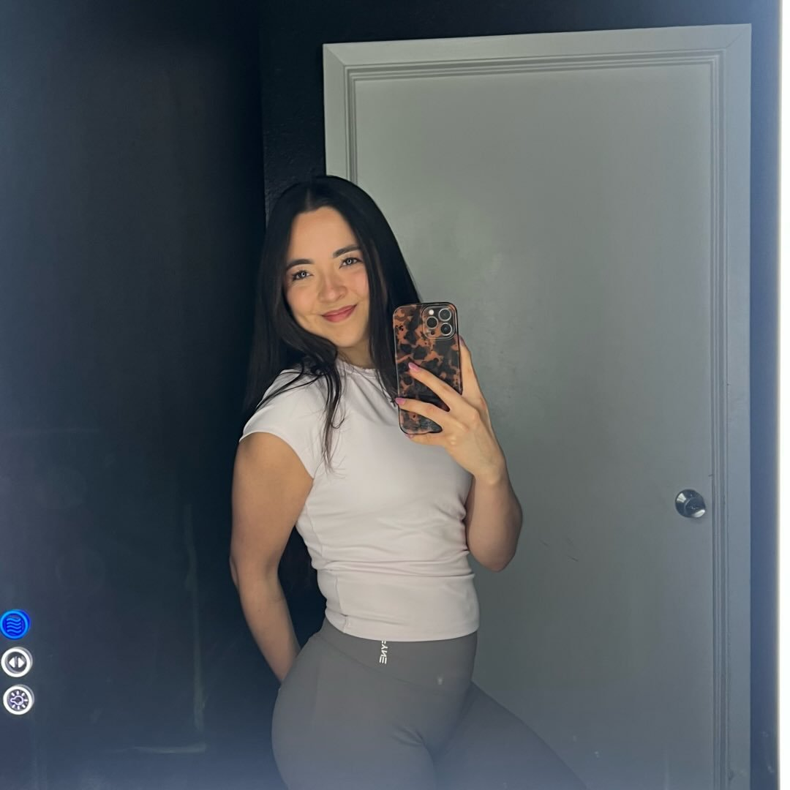

Build a balanced meal
Picture your plate in sections — no weighing required:
- ½ fruit & veggies (color + fiber)
- ¼ protein (fullness + muscle)
- ¼ carbs (your main energy)
- + a thumb of healthy fat & water
RD2B Lifting & Fueling Houston
I'm Yanelly — a dietitian-in-training who helps you fuel your body and hit your goals without the noise. Real food, plain language, no fad diets.

There's an overwhelming amount of confusing, contradictory nutrition advice out there. My whole goal is to cut through it — to make eating well simple enough that you'll actually do it.
I'm a Registered Dietitian-to-be studying nutrition at the University of Houston, Class of 2026. Whether you're building muscle, eating more balanced, or just trying to feel better day to day, you don't need a complicated plan. You need a few solid fundamentals you can repeat on autopilot. That's what lives here — and it's all free.
Picture your plate in sections — no weighing required:
Builds and repairs muscle; keeps you full longest.
Your main fuel — especially around workouts.
Supports hormones; keeps meals satisfying.
Keep these in and a good meal is ten minutes away.
No tracking, no math. Half the plate veggies and fruit, a quarter protein, a quarter carbs, plus a little healthy fat. That's a balanced meal — every single time.
Get the printable cheat sheetCottage cheese, berries, a drizzle of honey, granola. ~25g protein.
Chicken, rice, kimchi or veggies, a sauce you love. Meal-preps great.
Tuna mixed with Greek yogurt (not mayo), spinach, on a tortilla.
Oats, milk, Greek yogurt, chia, fruit. Stir at night, grab at sunrise.
More meal ideas on Instagram — @yanellyfuels →
A one-page printable to build any meal in seconds.
Exactly what to put in your cart, organized by aisle.
Simple recipes you can make on repeat.
Eating well shouldn't feel like a second job. Keep it simple, stay consistent, and let food work for you. — Yanelly
No — everything here is general educational content. For individualized medical nutrition therapy, work with a registered dietitian one-on-one.
Not at all. The balanced-plate method works without tracking. Tracking is just one optional tool — never a requirement.
Yes. No food is off-limits. It's your overall pattern that matters, not any single meal. Balance beats restriction every time.
Yep. The fundamentals will always be free. There may be optional premium resources down the road, but not the basics.
Follow along for daily nutrition tips, meals, and gym content — and be first to know when new guides drop.